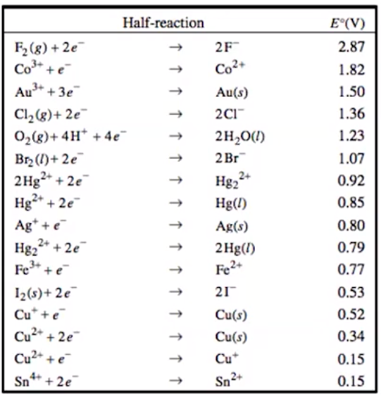
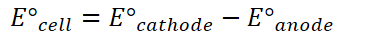
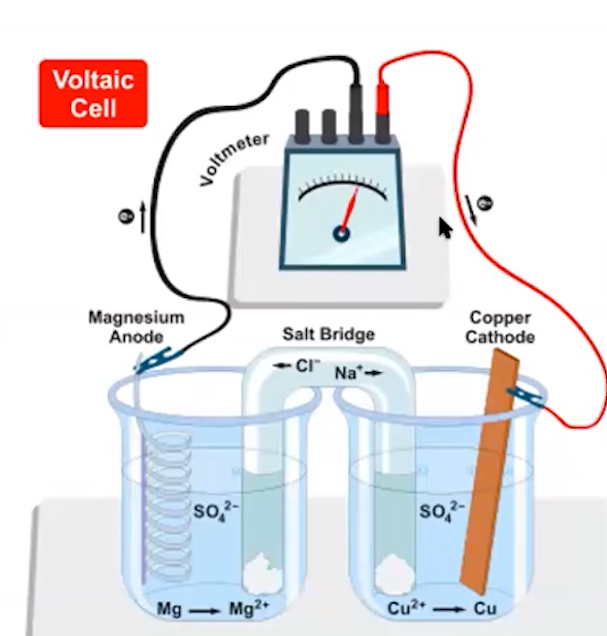
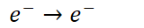

A reaction occurring in an electrochemical cell involves a difference in electrical potential (voltage) between the oxidation and reduction processes occurring in the half cells
Reduction Potentials:
{width="12.510416666666666in" height="0.6875in"}
Accurate under standard conditions: 1M solutions, 1 atm gases, 25C
Only apply for reduction and standard potentials
{width="3.75in" height="3.9166666666666665in"}
For an oxidation process, the reduction half reaction and the sign of the voltage are both reversed
{width="5.104166666666667in" height="0.3541666666666667in"}
{width="5.385416666666667in" height="0.3541666666666667in"}
<!-- -->
Standard Cell Potential:
{width="12.59375in" height="0.6875in"}
{width="4.041666666666667in" height="0.3333333333333333in"}
{width="6.40625in" height="0.3541666666666667in"}
{width="9.59375in" height="0.3541666666666667in"}
Electrical potential DOES NOT depend on the AMOUNT of substances reacting
 1100 ">{width="4.208333333333333in" height="4.40625in"}
{width="3.84375in" height="0.3541666666666667in"}
<!-- -->
{width="4.104166666666667in" height="0.3541666666666667in"}
{width="6.09375in" height="0.3541666666666667in"}
Thermodynamic favorability and cell potential
Thermodynamically favorable reactions have positive voltage (positive cell potential)
Thermodynamically unfavorable reactions have negative voltage (negative cell potential)
<!-- -->
Cell Potential and Free Energy
{width="3.1979166666666665in" height="0.3541666666666667in"}
The negative of the cell potential for the redox reaction from which it is constructed
{width="7.25in" height="0.3541666666666667in"}
{width="1.6666666666666667in" height="0.3333333333333333in"}
Only count this once: don't count it once per side of the reaction
{width="3.0625in" height="0.3541666666666667in"}
{width="7.5625in" height="0.3541666666666667in"}
{width="2.6666666666666665in" height="0.3333333333333333in"}
Value produces joules: convert to kJ if needed
{width="4.083333333333333in" height="0.3541666666666667in"}
{width="4.166666666666667in" height="0.3541666666666667in"}